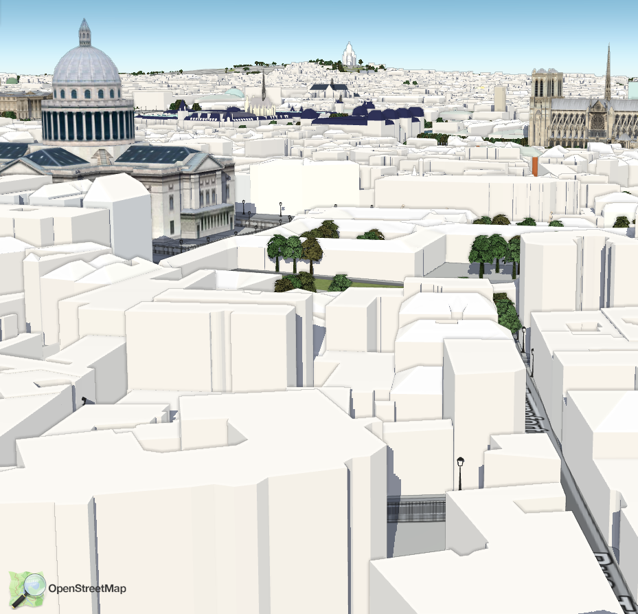
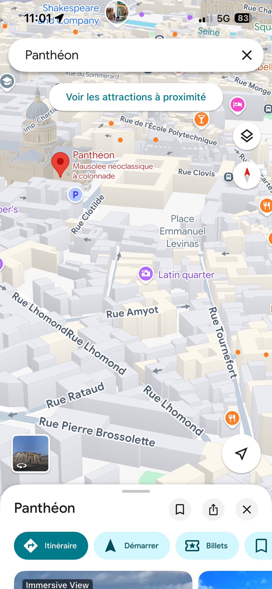
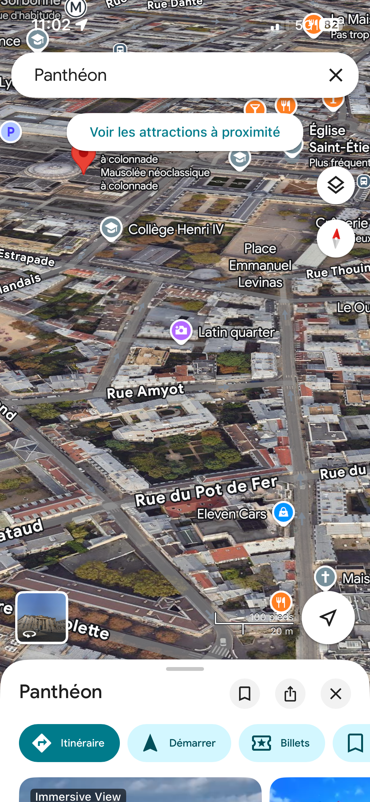
Pour commencer j’ai remarqué que le monument derrière était le panthéon j’ai donc avec Google map chercher le même point de vu comme nous le remarquons avec les photos puis ensuite suis passé en mode sans relief pour pouvoir déterminer le nom de la rue.
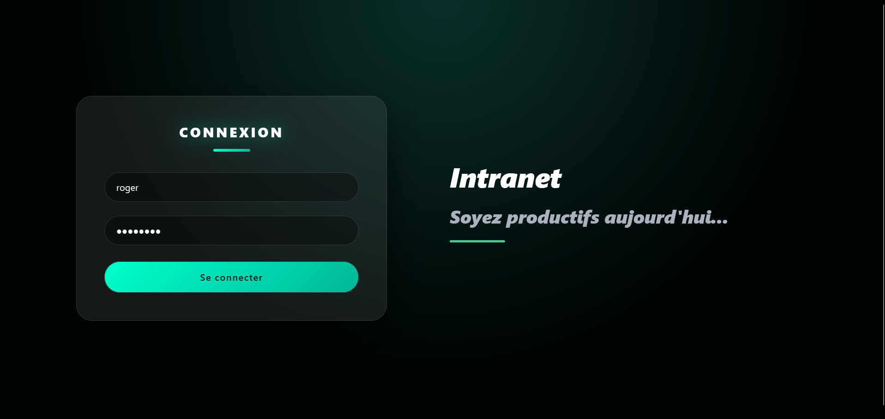
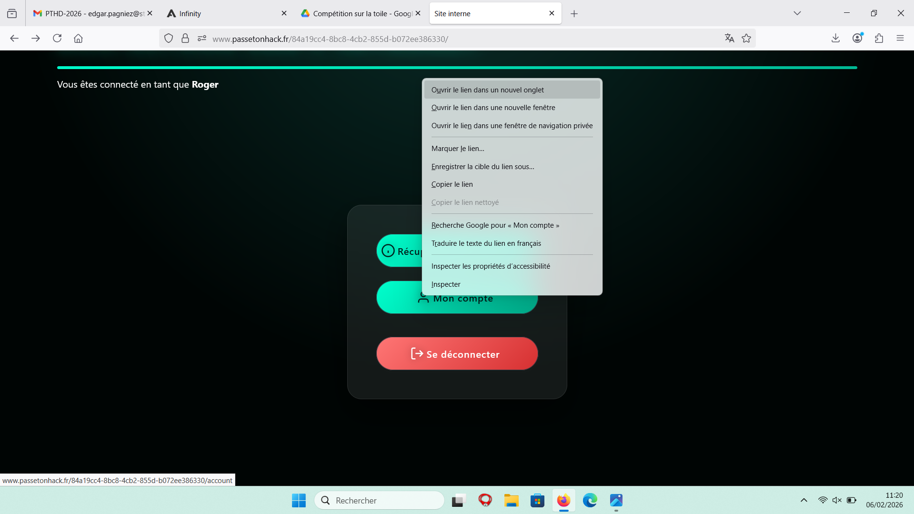
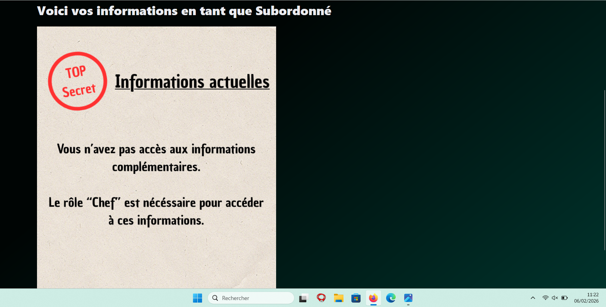
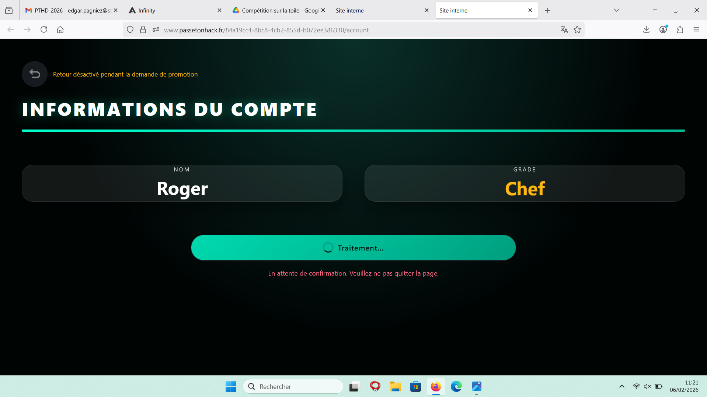
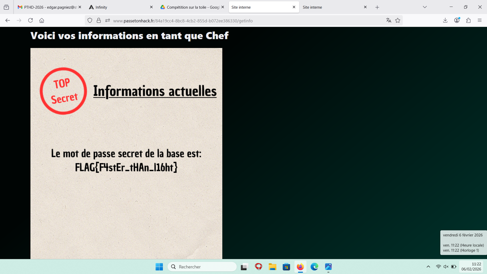
J’ai dû me connecter au compte de l’utilisateur fourni puis rien de compliqué il suffit d'avoir 2 pages ouvertes en même l’une qui fait une demande pour devenir chef et dans l’autre pendant la demande nous ouvrons l’autre onglet. Lorsque que nous demandons à devenir chef nous le somme pendant environ 5s sauf qu’il est impossible de faire de retour en arrière ou de changer de page c’est pour cela qu’en dupliquant l’onglet nous pouvons avoir les informations secrètes
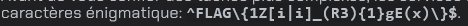
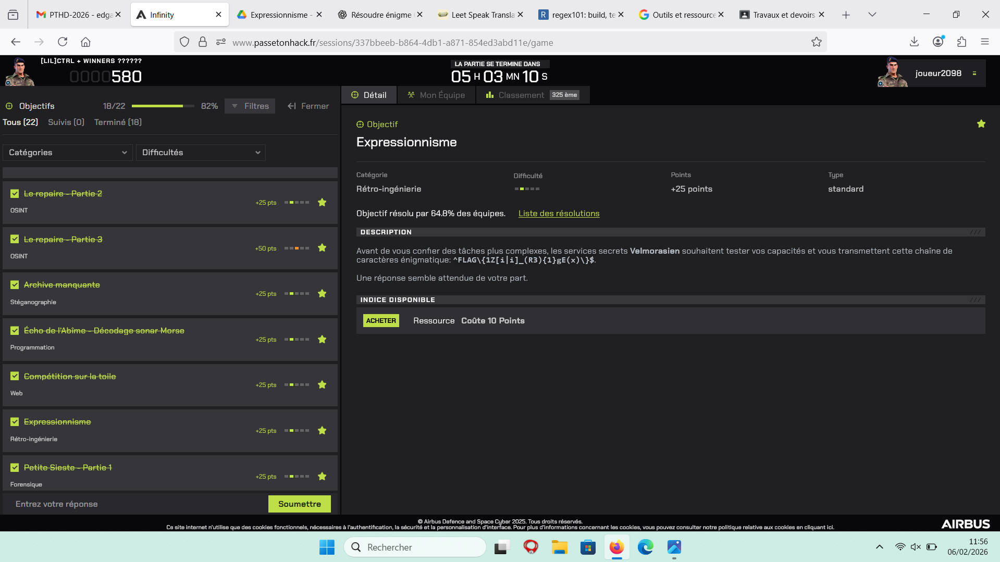
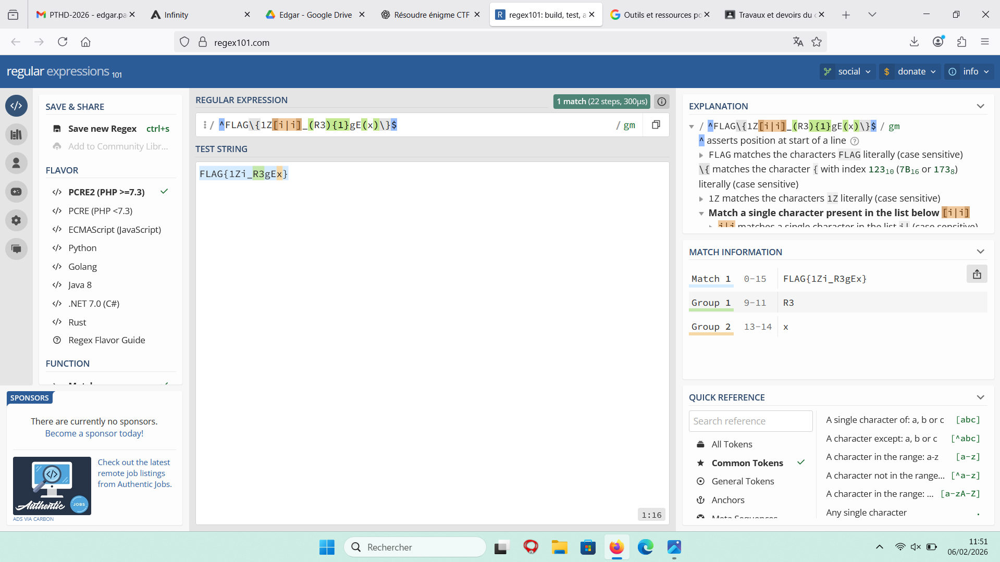
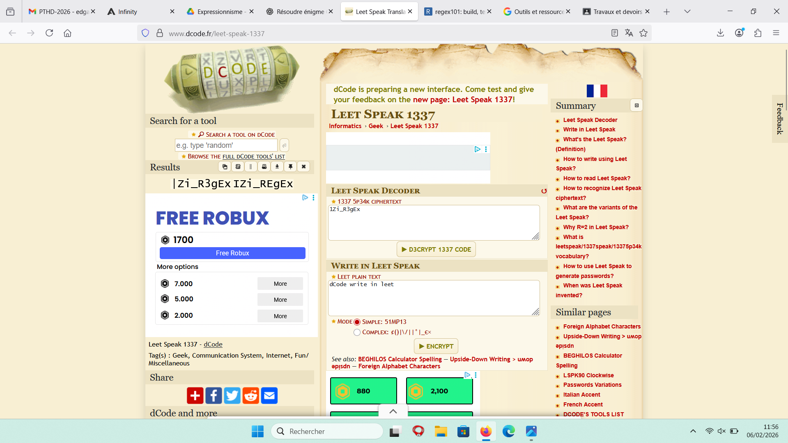
Je me suis aidé de chat gpt pour qu’il me fournisse des outils je lui ai bien précisé de ne pas le faire pour moi.J’ai dû analyser une chaîne de caractères fournie dans l’exercice. Le but n’était pas de trouver un mot au hasard, mais de comprendre la structure du message avant de chercher à le décoder. D’abord, j’ai observé que le format ressemblait à un flag classique de type FLAG{...}. Cela signifie que la partie importante se trouve entre les accolades et que le reste sert surtout d’encadrement. Ensuite, j’ai remarqué la présence de chiffres mélangés à des lettres comme 1 ou 3. Cela fait penser au leet speak, une écriture utilisée en informatique où certains chiffres remplacent des lettres (par exemple 1 peut remplacer I ou L, et 3 peut remplacer E). Puis, certains symboles comme les crochets [ ], les parenthèses ( ), le symbole | ou encore {1} ressemblent fortement à de la syntaxe utilisée en expressions régulières (regex). En simplifiant ces éléments : [i|i] revient simplement à “i” {1} signifie “répété une fois”, donc cela ne change rien Les parenthèses servent seulement à regrouper En supprimant les éléments inutiles et en remplaçant les chiffres par leurs équivalents en lettres, la chaîne devient progressivement plus lisible. Si le résultat n’est pas immédiatement clair, il est possible de tester un décalage simple comme un chiffrement de César ou un ROT13, mais seulement après avoir simplifié correctement la chaîne. L’objectif principal était donc de comprendre la logique derrière chaque symbole au lieu d’utiliser directement un outil de décodage au hasard. Une fois la chaîne nettoyée et interprétée correctement, le message devient compréhensible.
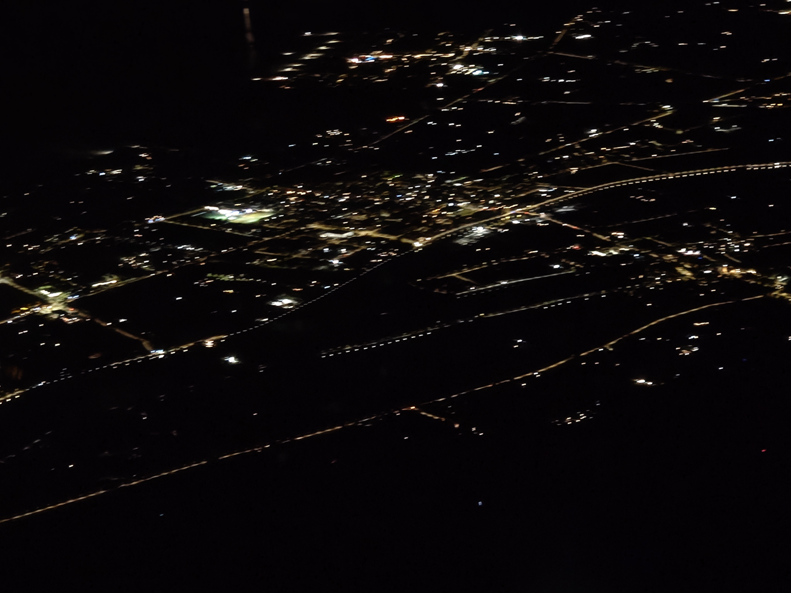
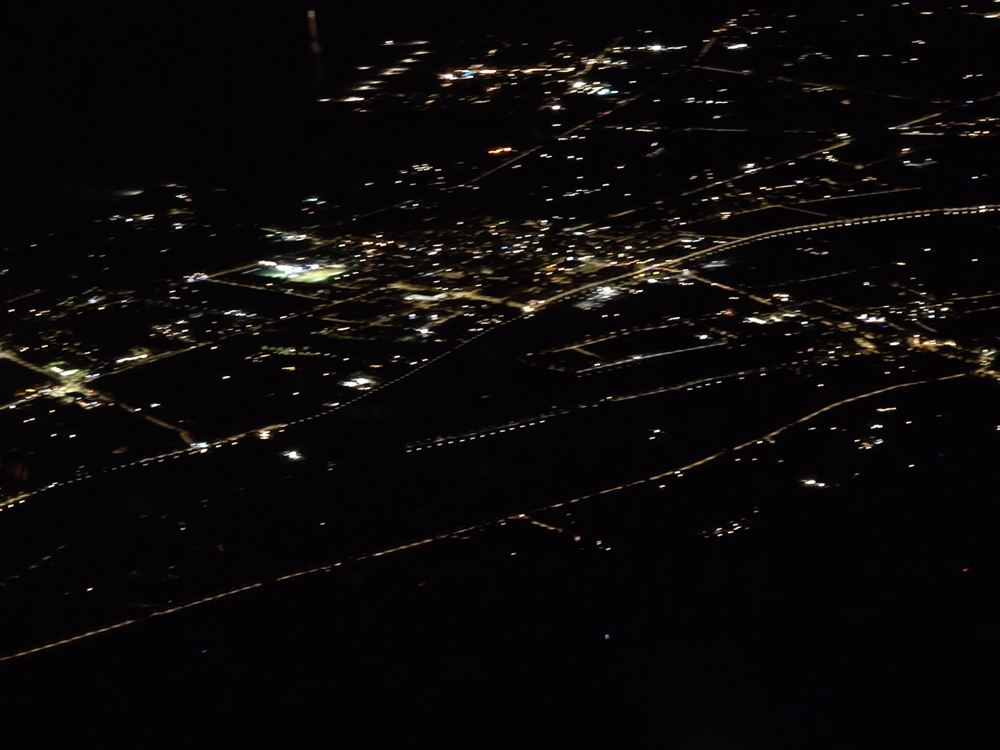
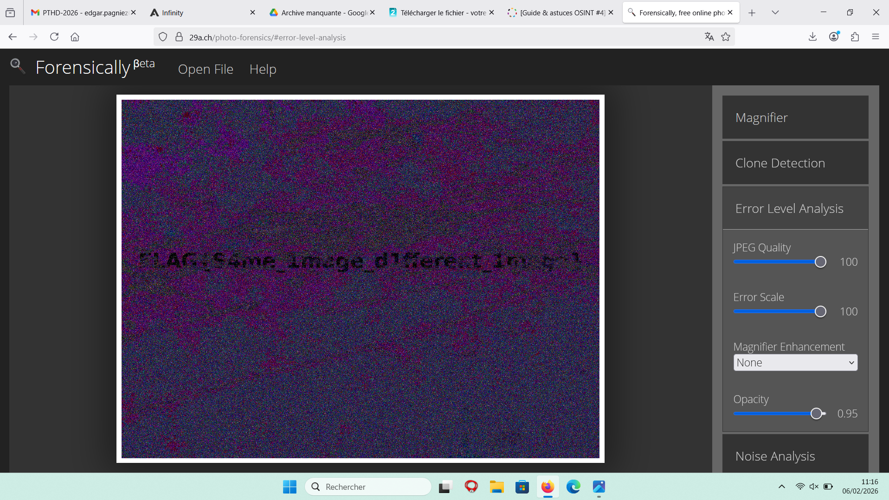
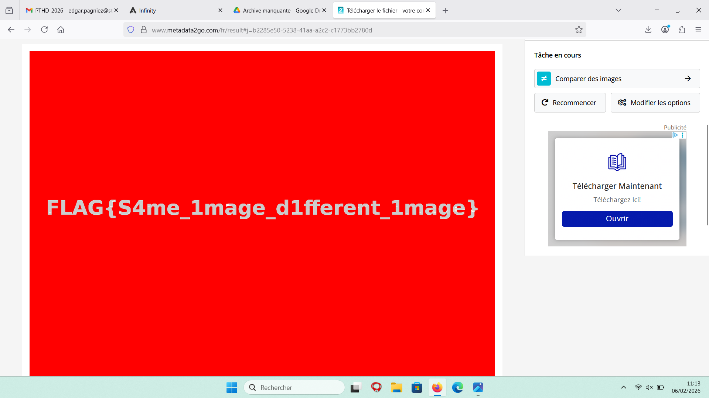
Tout d’abord j’ai recherché des informations sur des site d’osint pour trouver des lien vers des outils pour explorer les informations de la photo au début j’ai réussis à apercevoir le flag mais très mal. J’ai donc cherché un autre site qui comptait seulement deux photos et par la suite j’ai donc réussi à trouver le flag.
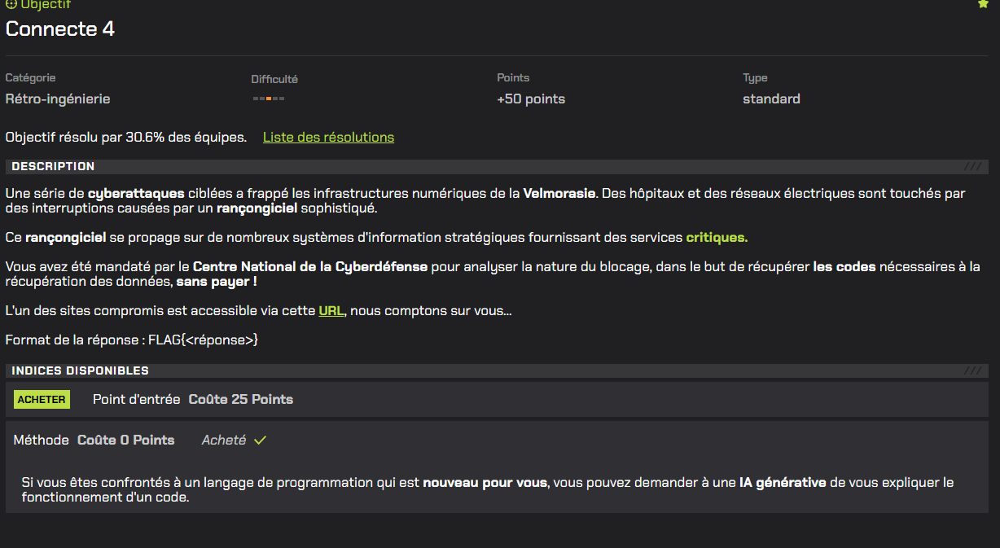
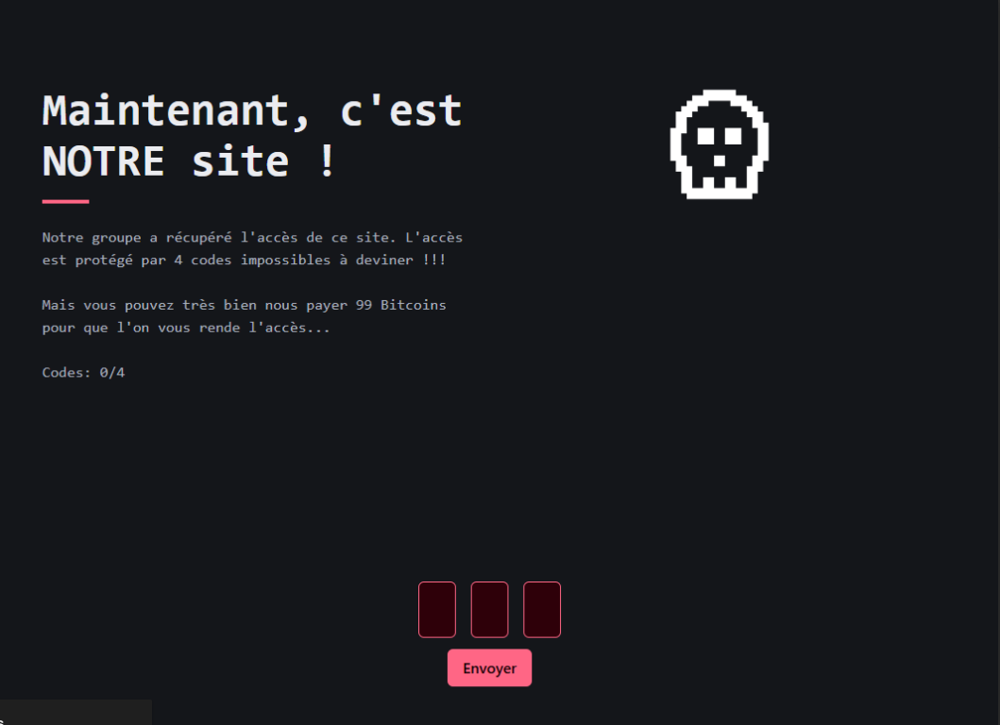
Nous avons d’abord cherché des indices dans l’énoncé.
Ne trouvant pas la réponse, j’ai analysé le code source.
J’ai remarqué que chaque code était généré selon un calcul précis, utilisant une méthode similaire à chaque étape.
J’ai réussi à comprendre le fonctionnement des deux premiers niveaux.
Pour le troisième, je ne maîtrisais pas le langage utilisé.
J’ai alors utilisé une IA générative pour m’expliquer le fonctionnement du code.
Une fois compris, j’ai utilisé la console pour exécuter une requête.